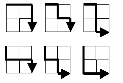

从矩阵左上角至右下角（无权值）问题
问题来源
来自于Euler Project的第十五个题目，题目不复杂，但是可以有很多种思路和解法。此外，我宿舍一姐们面试刚好碰到此题。题目链接
问题描述
一个 M*N 的矩阵，从矩阵的左上角到矩阵的右下角，只能向右走或者向下走，有多少种解法？
例如一个2*2的矩阵，有下面六种解法。

问题解法
假设矩阵有M行N列。
数学解法
使用排列组合有两种思路。因为只能向右走或者向下走。
（1）在M+N次行走后，才能到达终点，也就是右下角，而在这M+N次行走中，有M次是向下，N次向右。所以是一个选择问题。
$$ {C_{m+n}^{m}} \tag{1} $$
对于Euler这题而言，就是C(40, 20)，在google中输入40 choose 20，答案就出来啦。
（2）水平行走记作0，竖直行走记作1。每一种行走足迹可以作为一个0,1串，其中n个0，m个1。可以看做0000000000000（n个0）1111111111111（m个1）的重排列。
也就是
$$ \frac{(m+n)!}{m!n!} \tag{2} $$
如果实在想不出公式，可以写出前面一些特殊的然后找规律，这也是没有办法的办法了，但是不一定有效。
递归解法
递归，动态规划，说白了，就是把一个问题分解成子问题，然后找出最小子问题。动态规划还需要找出问题的求解顺序。
因此，我们发现了这个问题的递归式：
matrix[i][j]=matrix[i-1][j] + matrix[i][j-1]
初始条件：matrix[i][0]=matrix[0][j]=1
1 |
|
但是，递归因为不记录中间结果，会重复计算很多中间值，超级费时！
比如这个程序在我的PC上跑，1616的时候，需要3.727000秒。而1717规模，需要13.601000秒，当问题规模到1818时候计算时间已经到了52.803000秒了，基本到2121是很慢很慢的了。
动态规划解法
和递归的原理差不多，需要多注意一个问题就是计算顺序的问题。这个题就按顺序一行一行扫描就行了。
1 |
|